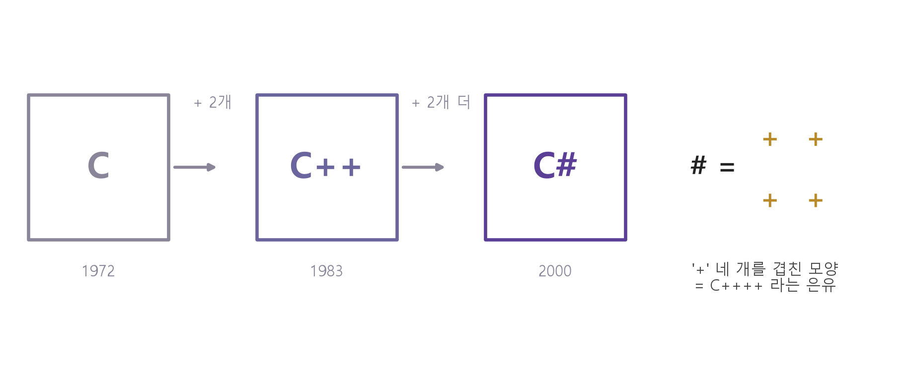
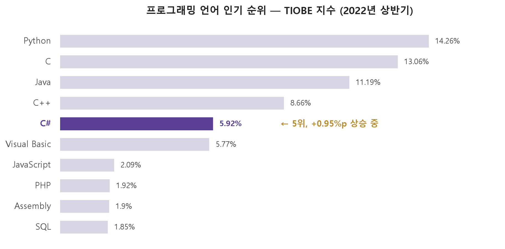
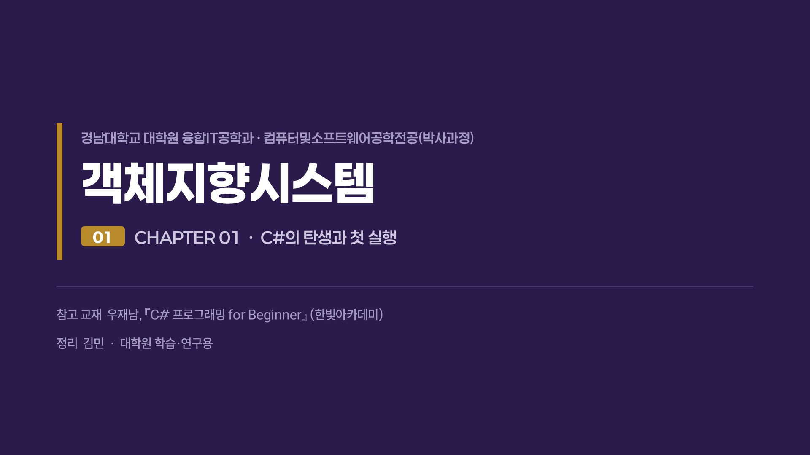

Chapter 01 at a glance
C#은 마이크로소프트가 2000년에 발표한 완전한 객체지향 언어다. 소스 코드(.cs)는 빌드를 거쳐야 실행 파일(.exe)이 되므로, 한 글자라도 고쳤으면 반드시 다시 빌드해야 한다. 개발 도구는 무료인 Visual Studio Community.
C#의 탄생 — 소송과 이름의 비밀
C(1972) → C++(1983) → C#(2000), 그리고 #에 숨은 + 네 개
| 연도 | 사건 |
|---|---|
| 1972 | 벨 연구소 데니스 리치가 C 개발 — 유닉스가 C로 만들어지며 주류로 |
| 1983 | C에 객체지향을 얹은 C++ ("한 단계 향상"의 ++) |
| 1991 | 제임스 고슬링, C++의 복잡함을 덜어낸 자바 개발 |
| 1990s 말 | 마이크로소프트, 자바 확장판 J++를 만들었다가 포기 |
| 2000 | 마이크로소프트, 닷넷 프레임워크의 언어 C# 발표 |

쉽게 말하면읽는 법은 '씨샵'. C++를 계승하되 자바의
영향을 받았고, C/C++·자바·Visual Basic의 장점까지 흡수한 독자 언어입니다. 음악의 ♯(반음 올림)과도
통하는 중의적 이름이에요.

C#의 특징 여섯 가지
"엄격한 게 장점"이라는 역설이 핵심입니다
| 특징 | 내용 |
|---|---|
| ① 간결한 문법 | 포인터 제거, 메모리는 가비지 컬렉터가 전담 |
| ② 엄격한 문법 | case에 break 없으면 오류, 초기화 안 된 변수도 오류 — 실수를 미리 차단 |
| ③ 완전한 객체지향 | 클래스·추상화·캡슐화·다형성·상속 100% 지원 (11~12장에서 본격 학습) |
| ④ 멀티 스레드 | 한 프로세스 안에서 여러 스레드 병렬 처리 |
| ⑤ 다양한 응용 | 데스크톱 앱 · ASP.NET 웹 · DB · 유니티 게임까지 |
| ⑥ CLR 환경 | CLR 위에서 실행 — 성능·타 언어 통합·예외 처리·안정성 |
시험 포인트 — "틀린 설명 고르기"로 나옵니다. "문법 체크가 유연하다"(×, 엄격하다),
"절차지향 언어다"(×, 객체지향)가 단골 함정. 한계도 하나: 하드웨어 직접 제어는 제한적이라 C/C++와 혼용합니다.
닷넷 3형제 — 이름이 비슷해서 헷갈린다
| 이름 | 등장 | 정체 |
|---|---|---|
| 닷넷 프레임워크 | 2002 | Windows 전용 개발·실행 환경. 4.8이 마지막 — 수업이 쓰는 환경(C# 7.3) |
| 닷넷 코어 | 2014 | 크로스 플랫폼(윈도우·리눅스·맥)용 |
| 닷넷 (.NET) | 2020~ | 둘을 통합한 이름 — .NET 5부터 모바일까지 지원 |
쉽게 말하면우리 수업 환경은 .NET Framework 4.8 + C# 7.3.
Visual Studio를 설치하면 같이 깔리고, 초보 단계에서 버전은 신경 쓰지 않아도 됩니다.
코드가 .exe가 되기까지 — 빌드
파이썬과 가장 다른 지점입니다
코딩(.cs) → 컴파일 → 링크 → 실행(.exe)
컴파일 = 기계어로 번역(→ 오브젝트 파일) · 링크 = 하나로 결합(→ 실행 파일).
둘을 한꺼번에 처리하는 것이 빌드(Build). 소스가 하나뿐이어도 반드시 거친다.
| 컴파일러 언어 | 스크립트 언어 |
|---|---|
| 일괄 번역 후 실행 파일을 실행 | 한 줄씩 해석하며 즉시 실행 |
| C · C++ · 자바 · C# | 파이썬 · 자바스크립트 · 펄 |
| 실행 속도 빠름 · 배우는 데 오래 | 실행 파일 없음 · 빨리 배움 |
쉽게 말하면영상처리 과목의 파이썬은 '수정 → 저장 → 끝'이었지만,
C#은 '수정 → 저장 → 재빌드'까지 해야 실행 결과가 바뀝니다. 더 깊이:
C#의 .exe는 사실 IL
상태의 '어셈블리'이고 실행 순간 CLR이 기계어로 재변환하지만, 내부 처리라 몰라도 됩니다.
실험 ① 재빌드 함정 체험
교재 실습 1-5의 함정을 그대로 재현했습니다. 숫자를 고치고 [저장]만 한 채 [실행]해 보세요 — 왜 결과가 안 바뀔까요?
int result; result = 100 - ; Console.WriteLine(result);
아직 실행하지 않았습니다.
개발 환경 — Visual Studio, 무료로 전부 된다
| 에디션 | 가격 | 비고 |
|---|---|---|
| Enterprise / Professional | 유료 | 기업용 — 기능 많은 순 |
| Community | 무료 | 유료판과 기능 차이 없음 — 개인·교육기관 제한 없이 |
| Express | 무료 | 2015를 끝으로 단종 — Community로 대체 |
설치 요점visualstudio.microsoft.com에서 Community 2022 내려받기 →
워크로드는 [.NET 데스크톱 개발]만 체크(약 6.2GB, 여유 10GB 권장) → 로그인은 <나중에> 가능하지만
30일 내 마이크로소프트 계정 로그인 필요(무료). 설치 전에 파일 탐색기 '파일 확장명 표시'를 켜 두세요.
첫 프로젝트 — 다섯 번의 클릭
| 단계 | 내용 |
|---|---|
| ① | 실습 폴더 C:\CookC# 을 미리 만든다 |
| ② | [새 프로젝트 만들기] → 언어 [C#] → 템플릿 [콘솔 앱(.NET Framework)] |
| ③ | 이름 First · 위치 C:\CookC# · [솔루션 및 프로젝트를 같은 디렉터리에 배치] 체크 |
| ④ | 프레임워크 4.8 → <만들기> |
| ⑤ | 소스 파일 Program.cs가 자동 생성 — 여기에 코딩 |
가장 흔한 실수 — 템플릿 목록의 그냥 [콘솔 앱]을 고르면 안 됩니다.
반드시 뒤에 (.NET Framework)가 붙은 것! 그리고 규모 관계는 솔루션 ⊃ 프로젝트 ⊃ 프로그램 소스
(이 수업에선 솔루션 1 = 프로젝트 1).
첫 코드 세 줄 — 그리고 오류 읽는 법
직접 친 부분은 세 줄
int result; (변수 선언) →
result = 100 - 50; (=는 오른쪽을 계산해 왼쪽에) →
Console.WriteLine(result); (화면 출력). 나머지 using·namespace·class는 자동 생성 —
당분간 건드리지 않습니다.
세미콜론이 문장의 끝
C#은 줄바꿈이 아니라 ;가 문장의 끝. 세미콜론을 빼고 빌드하면 CS1002 "; 이 필요합니다"가 파일·줄 번호와 함께 떠요. 오류를 더블클릭하면 그 줄로 바로 이동 — 오류 메시지를 읽는 습관이 곧 실력입니다.
이 과목의 시험 스타일"실행 결과 화면만 주고 → 이 결과를 만드는
코드를 짜시오" 유형이 예고되어 있습니다. C# 실습실의 받아쓰기·자유 코딩, 연습 문제의 ✍ 코드 역산이
바로 그 훈련장이에요. 학기 후반엔 회원 관리 프로그램류 개별 프로젝트로 이어집니다.
자료실 — 강의 PPT 내려받기
챕터를 골라 .pptx 파일을 받으세요. 발표자 노트(설명 멘트)가 포함되어 있습니다. 새 챕터가 올라오면 여기에 쌓입니다.
참고연습 문제 탭의 [문제지 만들기]로 인쇄용 PDF 문제지도 만들 수 있습니다.
강의 슬라이드 미리보기
챕터를 고르고 ← → 방향키, 좌우 클릭, 아래 바로 넘겨 보세요

원본이 필요하면 상단의 PPT 내려받기 버튼으로 챕터별 .pptx 파일을 받을 수 있습니다. 발표자 노트(각 슬라이드의 설명 멘트)는 PPT 파일 안에 들어 있어요.
C# 실습실 — 결과를 예측하고 바로 확인
교재 1장 예제와 SELF STUDY가 들어 있습니다. ★는 교재 실습 코드 그대로.
값을 바꾸고 [실행]하면 학습용 간이 C# 해석기가 즉시 결과를 보여 줍니다 (세미콜론 검사까지!)
문법은 잠겨 있고, 연한 밑줄 값만 바꿔 가며 실행해 봅니다 — 개념 실험에 최적.
원본 코드 보기
원본 — 보고 그대로 타이핑
내 타이핑
실행 결과가 여기에 표시됩니다.
이렇게 써 보세요
연한 밑줄이 있는 숫자·문자열을 하나씩 바꿔 가며 [실행]해 보는 게 최고의 공부예요.
문법은 잠겨 있으니 마음껏 실험하세요 — 망가뜨려도 [값 초기화]로 언제든 원본으로 돌아옵니다.
참고 — 이 실행기는 1장 학습용 간이 C# 해석기입니다 (변수 선언·대입·Console.WriteLine 지원,
세미콜론 누락 시 진짜처럼 CS1002 오류!). 진짜 빌드·실행은 Visual Studio에서 — 자료실 탭의 PPT에 설치법이 있습니다.
연습 문제
수치가 매번 바뀌고, 문제 속 보라색 숫자를 직접 고치면 그 값 기준으로 채점됩니다.
0 / 0 정답